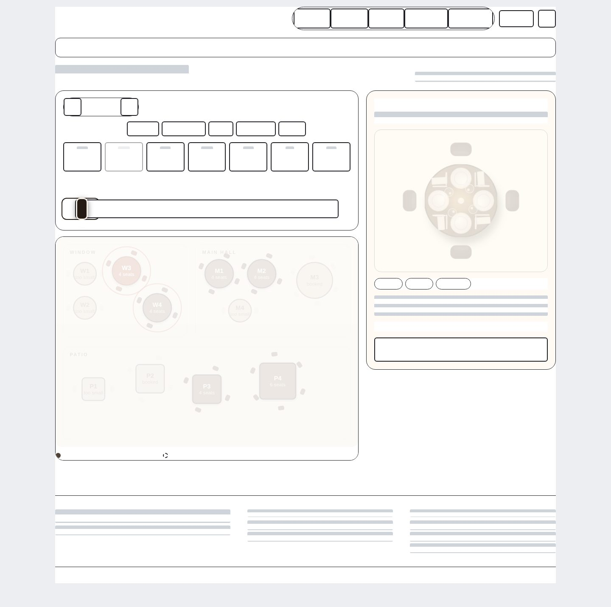
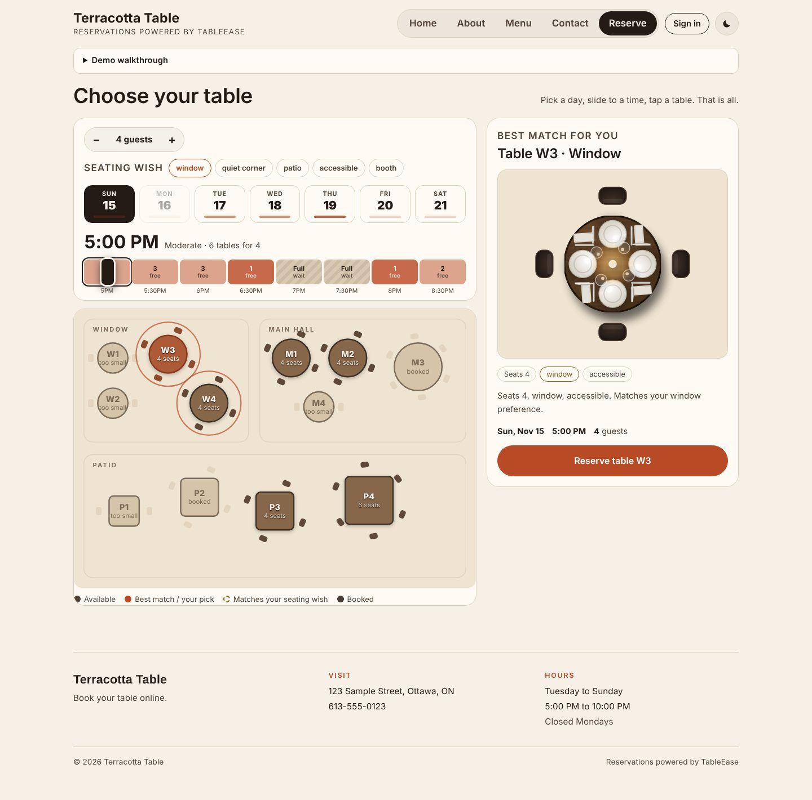
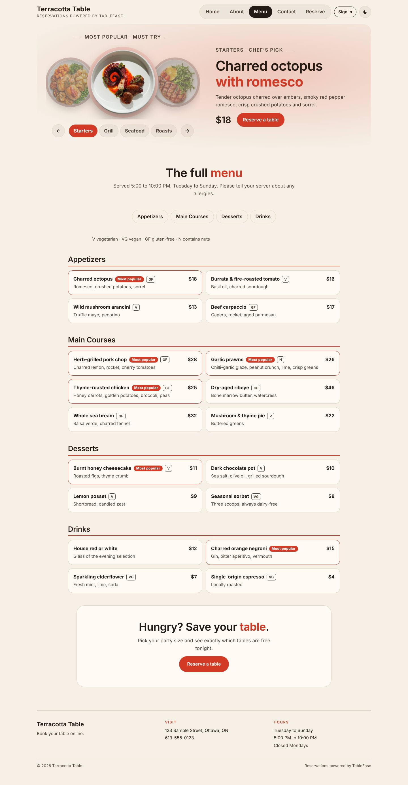
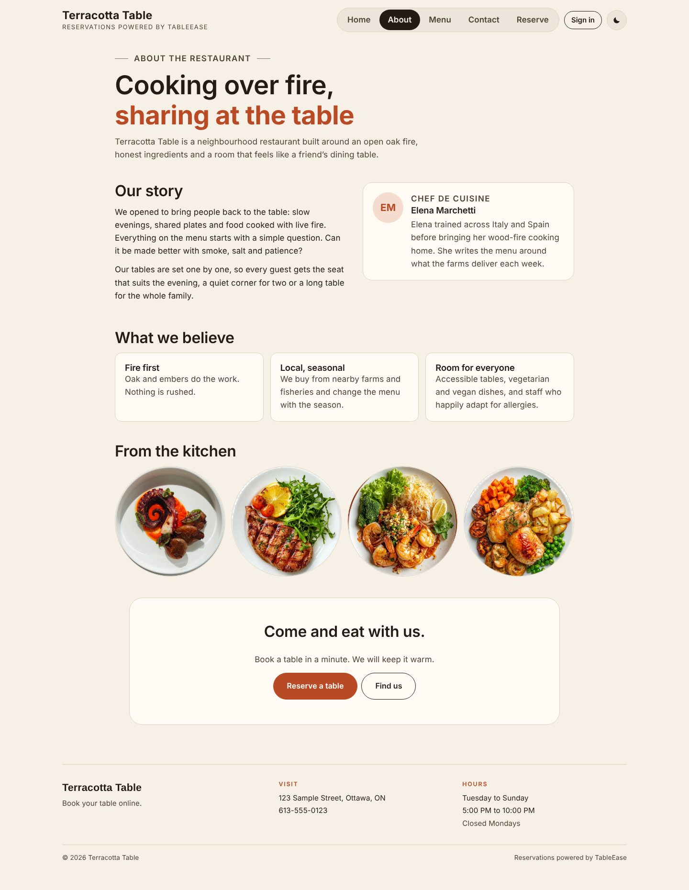
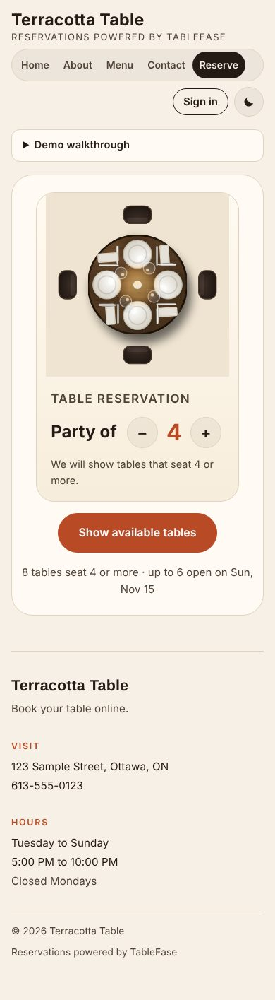
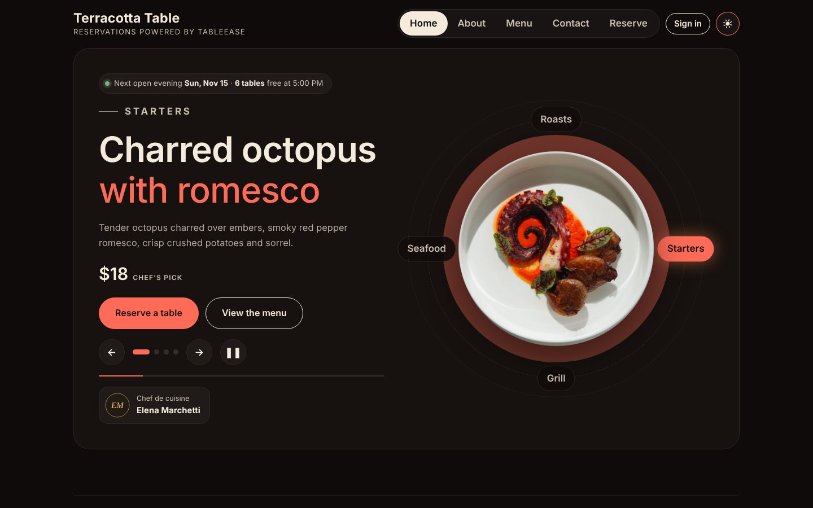

A restaurant website where guests see the menu, pick a day and time, and choose their own table on a floor plan, built as the guest-facing front end for TableEase.
Role
UI design and front-end development
Type
Concept project for TableEase
Tools
HTML, CSS, JavaScript
Focus
Reservations, menu, accessibility
01
The plan
TableEase is a reservation system for restaurants. It needed a believable restaurant to run on, so I designed Terracotta Table: a neighbourhood restaurant cooking over an open oak fire, with a website whose main job is to get a guest from “I’m hungry” to “my table is booked”.
Show the food first, because the menu is what makes people want to book.
Let a guest book without calling: party size, day, time and a table, in a few taps.
Show availability honestly, including when a time is full and a waitlist is the only option.
Give guests and restaurant staff their own sign-in on the same site.
1. Map the guest journeyHome, menu, then reserve, with About and Contact for trust and practical details.
2. Sketch the booking flowDecide what a guest must choose, and in which order: guests, day, time, table.
3. Wireframe, then styleLow-fidelity layouts first, then a warm terracotta and cream look with a dark mode.
4. Build and test the prototypePlain HTML, CSS and JavaScript, checked on desktop and phone widths.
02
The idea
Most booking forms ask for a date, a time and a number, then hope for the best. I wanted the guest to see the room. The idea was to turn the reservation into a small visual game: slide to a time, tap a table, done.
Dish-first home page
A carousel of chef’s picks, with previous, next and pause controls, so the page is lively but never out of the guest’s control.
A menu that is easy to scan
Four sections, prices on the right, a “Most popular” label, and badges for vegetarian, vegan, gluten-free and nuts.
Pick a time with a slider
Each half-hour slot shows how many tables are free. Full slots are hatched and offer a waitlist instead of a dead end.
Choose a table on a floor plan
Window, main hall and patio. Tables that are too small or booked are dimmed, and the best match is highlighted for the guest’s seating wish.
Seating wishes
Window, quiet corner, patio, accessible and booth. Accessibility is a booking option, not an afterthought.
Guest and staff sign-in
Demo accounts are one click away, mirroring the accounts of the TableEase Django backend.
03
Design
I started with grey wireframes so the layout and the order of choices could be judged without colour or photos getting in the way. Drag the handle to see the same screen as wireframe and as finished design.
WireframeFinal design
Drag the handle, or use the arrow keys.
The booking screen


WireframeFinal design
Drag the handle, or use the arrow keys.
Every page




04
The prototype
The prototype is a working website, not a picture of one. Choose a party size, change the day, slide through the times and tap a table to see the booking panel update. Switch to dark mode, or sign in with a demo account.
Terracotta Table is a complete, working front end for a restaurant, ready to be connected to the TableEase backend. The address, phone number and email on the Contact page are samples for the prototype.
12Tables on the floor plan
18Dishes across four menu sections
7Days to book ahead
5Seating wishes, including accessible
Showing availability as a count and a colour, right on the time slider, means a guest never has to guess whether a time will work.
Putting accessibility in the booking flow itself turns it into a feature guests can choose.
Next: connect the booking panel to the live TableEase API and add email confirmations.